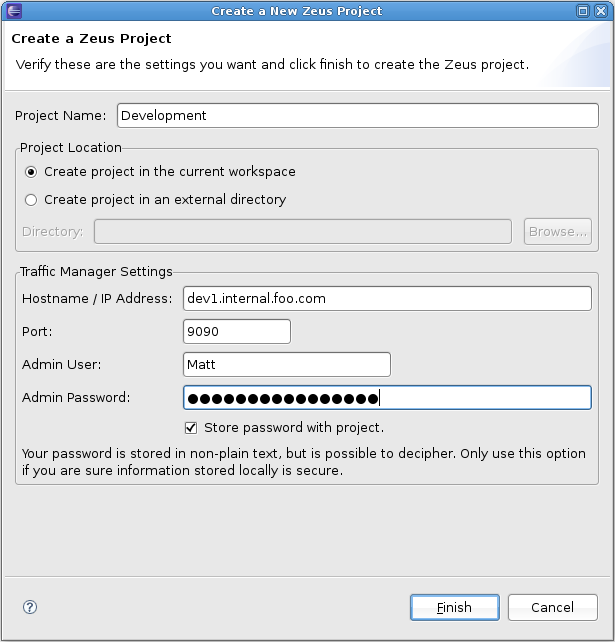

In order to use the Zeus plug-in, you must first create a connection to a working Zeus installation. This can be done via the 'Add new Zeus project' icon in the Zeus viewer pane. You will be presented with the New Connection dialog box shown below.
Fig.1: The new connection dialog
A new connection requires you to provide a project name, along with the following Zeus software credentials:
This is the hostname or IP address of the Zeus admin server
This setting gives you the option to save the new Zeus project somewhere other than your current Eclipse project workspace. You can specify an alternative if it suits your needs.
This is the port number of the Zeus admin server. By default this is 9090.
The user you want to connect to the Zeus SOAP API with. This user must be a member of the a group with 'Zeus Control API' permissions.
This is the password of the user you are connecting with.
You can choose to save the password with the new connection/project, so you are not prompted for it each time you start Eclipse. This is only recommended if you are sure your locally-stored data is secure.
Provided your credentials are correct, you should be presented with a new Zeus project in the Zeus Viewer pane, and a list of the rules will appear under each project. See the Zeus Viewer help page for more details.